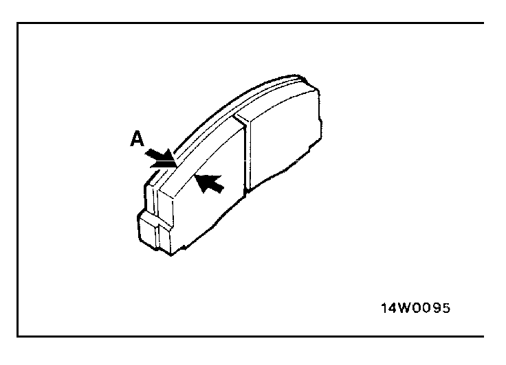

![[Previous]](https://mitsubishitechinfo.com/data/F24S/BUTTONS/fprevg.png)
![[Next]](https://mitsubishitechinfo.com/data/F24S/BUTTONS/fnextg.png)

15.DISC BRAKE PADS (Check for wear)
Check for fluid contamination and wear. Replace complete set of pads if defective.
Caution
The pads for the right and left wheels should be replaced at the same time. Never "split" or intermix brake pad sets.
All four pads must be replaced as a complete set.
Thickness of lining (A)
Limit: 2.0 mm (.08 in.)